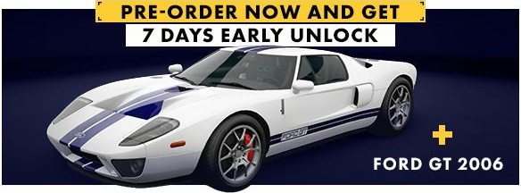
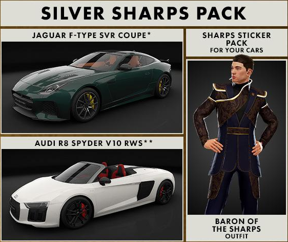
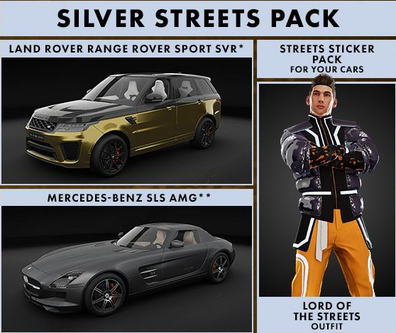
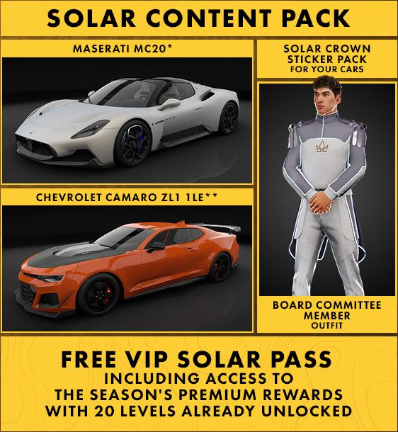

Test Drive Unlimited Solar Crownってどんなゲーム？
沢山の良さ

↓ Steamニュースハブ引用 (翻訳しているので若干文章がおかしい部分があります)
「本物でエキサイティングな体験を目指して多くのプレイヤーから最も包括的なオープンワールドのレースゲーム体験と見なされているTest Drive Unlimitedフランチャイズは、1:1スケールで再現された環境、美しく再現された車、リアルな運転体験、他のプレイヤーとのソーシャルインタラクション、多種多様なレースとゲームモード、そして単純なホイールでのストリートバトルを超えた主要な「ライフスタイル」コンポーネントなど、豊かで複雑なDNAを持っています。
Test Drive Unlimitedは単なるレーシングゲームではなく、車を運転する喜び、あなたのスタイルを反映した車、そして他の何よりも選んだ車についてのゲームです。
ディーラーから車を購入する、運転中にラジオを聴く、雨が止んだときにトップを下ろす、方向指示器を適切に使用する、さらには単に窓を開けることさえ、何百万人ものプレイヤーが恋に落ちた詳細です。
私たちの目標は、その期待に応え、これらすべての詳細を含めることでフランチャイズのDNAに忠実であり続けることです。しかし、私たちはさらに進んで、新しい体験を提供したいと考えています。
私たちは、香港島とその550kmの道路全体を、楽しみが尽きることのない無制限の遊び場にしたいと考えています。」
https://store.steampowered.com/news/app/1249970/view/3192501139825395531(→翻訳)
↓ 解説と一言
解説すると、Test Drive Unlimited Solar Crownでは、香港島を1:1スケールで再現された550kmのマップ、美しく再現された車、リアルな運転体験、他のプレイヤーとの交流、多種多様なレースとゲームモードなど、沢山の良さがあり、単なるレースゲームではなく、車を運転する喜びを感じることができ、人それぞれスタイルが反映された車に乗ることができ、楽しみが尽きることのない無制限の遊び場にしたいと思っているということだそうです。
他にも運転中にはラジオを聴くことができ、雨が止んだときにトップを下ろしたり、方向指示器を適切に使用したり、窓を開け閉めすることもできるようです。
まだプレイしていないのでクオリティは否かという段階ですが、どれも素晴らしい良さばかりですね。車好きにとって何が重要かを理解している開発者さんだと思いました。
これが実現すれば確実にオープンワールドレースゲームとして卓越されたゲームになること間違いないですね。
2つのクラン


「Test Drive Unlimited Solar Crownは、レースでの勝利と同じくらいスタイルと評判が重要なレース競技の新しいビジョンを提供します。私たちのゲームでは、香港島で開催されるソーラークラウンコンペティションは、高級車の裕福な愛好家によって争われます。彼らの車は彼らの個性の延長線上にあります。あなたが私たちのウェブサイトで見たように、贅沢の2つのビジョンが街に現れ、2つの一族が形成されました:ストリートとシャープス。
各クランは、そのスタイルを都市に押し付けたいと考えています。したがって、プレイヤーはクランに同調し、そのライフスタイルを擁護することを選択できます。ライバル一族への敬意は変わらない一方で、ハンドルを握って彼らの優位性を誇示する決意が常にあります。また、各クランには本部があり、集まって勝利を祝い、新しいミッションを見つけることができます。あなたのラグジュアリーに対するビジョンが洗練されてエレガントであろうと、挑発的で反抗的であろうと、常にそれを披露するチャンスがあります。ストリートは、よりアンダーグラウンドなナイトクラブの雰囲気を持つ文化を持ち、ソーラークラウンコンペティションのために引き継いだ古い建物に集まります。島の北部中央部にある湾仔の工業地区にあります。シャープスに関しては、彼らは市の西にある西部地区の豪華な建物の最上階とバルコニーを民営化しました。より落ち着いた洗練された雰囲気が、この本社に漂っています。各本部には、ストリートであろうとシャープであろうと、すべてのプレイヤーがアクセスできる「公開」エリアがありますが、より興味深いのは、忠誠を証明したクランメンバーのみが利用できるVIPエリアです。このエリアでは、非メンバーの視界から、ライバル陣営を不安定化させる目的で会議が開催され、ミッションが割り当てられます。」
https://store.steampowered.com/news/app/1249970/view/3192501139825395531(→翻訳)
解説すると、ストリートとシャープスという2つのクランがあり、それぞれ自分たちのスタイルを都市に反映させたいと思っていて、プレイヤーそれぞれはどちらかのクランに入りレースで勝利し続けることが目的のようです。
ストリートはアンダーグラウンドなナイトクラブの雰囲気の文化を持ち、場所は島の北部中央部にある湾仔の工業地区で、ソーラークラウンコンペティションのために引き継いだ古い建物に集まっているようです。
シャープスは、豪華な建物の最上階とバルコニーを民営化していて、場所は市の西にある西部地区にあり、より落ち着き、洗練された雰囲気が漂っているようです。
恐らく、これがストーリーモードに当たるんですかね？
ストリートはかっこいい系で、シャープスはゴージャス系なんだと思います。どちらも見ごたえがありそうでいいですね。
個人的にはストーリーの違いや入らなかったクランもプレイできるのかが気になりますね。今の段階では分からない部分が多いものの、2つ分かれているということから1度で2度おいしい感じがして凄く楽しみですね。
ソーシャルハブ

「TDUで車を買うのは、いつも特別な瞬間です。これは、美しい車のファンにとってゲームの核となる部分です。TDUSCでは、私たちの車を展示する特別な場所を作りました。ゲームを進めてレベルアップするにつれて、香港島全体の実際の場所でそれらを見つけることができます。
新しい車を購入する前に、正しい選択をするために時間をかけることができることを確認します。ディーラー内を自由に動き回ったり、車と対話して希望のモデルを選択したり、外観を詳細に鑑賞したり、ドアを開けた後に中に入って快適さを味わったり、クラクションを試したり、エンジンを始動したりすることもできますが、これは現実には常に可能であるとは限りません!
このすべての相互作用は、私たちが「ソーシャルハブ」と呼んでいる場所で他のプレイヤーと行われます。アバターを動かせるすべてのエリアと同様に、他のプレイヤーやあなたのような他の車愛好家とチャットするための待ち合わせ場所です。私たちは、プレイヤー同士が出会い、コミュニケーションをとることが重要だと考えています。その後、一緒にプレイすることを決めて、素晴らしい車で走り回る楽しみを大幅に増やすことができます(同時にボーナスを獲得できます)。
最終的な選択をする前に、明らかに車を試乗して、ハンドリングとドライブが期待に応えていることを確認できます。決定したら、必要なモデルを正確に選択できます。このゲームでは、メーカーの公式オプション(ペイント、インテリアカラー、リム)が提供されているため、夢の車を購入することができます。
カスタマイズをさらに進めたい場合は、そのための特別な場所、ワークショップを作成しました。最後に、エクスペリエンスを可能な限り本物にするために、トランザクションはキーを受け取ることで終了します。それはすべてTest Drive Unlimitedの精神です」。
https://store.steampowered.com/news/app/1249970/view/3639508923218266317(→翻訳)
解説すると、マップに沢山の展示場があり、そこでは自由に動き回ることができるので、ソーシャルハブというオンラインで他のプレイヤーと交流することもでき、車を買う際は外観を鑑賞できたり、ドアを開けると中に入ることもできたり、エンジンをかけてクラクションを鳴らすこともでき、さらに試乗もできるということです。
Forza Horizon 5でいうHorizonフェスティバルですが、ここまでのことはできないので素晴らしい点ですね。
カスタム

「あなたの車に個人的なタッチを与えたいですか?それがソーラークラウンワークショップの目的です。次のレースに備える必要がありますか?もっとパワーやトラクション、もっと遊び心のある車が、最長のドリフトをこなすために必要?ワークショップに立ち寄ってください!あなたのストリートまたはシャープのスタイルを完全または部分的なペイントジョブで誇示したいですか?そのためにもワークショップが欲しくなるでしょう!
パフォーマンスの向上を求めるなら、サスペンションからギアボックス、エンジンの完全な構成まで、幅広い変更が利用可能です。あなたがあまり整備士でない場合はどうなりますか?技術的な特性は、パワー、トラクション、加速、ブレーキなど、重要なことに集中できるように簡素化されています。内燃機関車用は6つのカテゴリーに13種類、電気自動車には6つのカテゴリーに12種類のカスタマイズ可能なパフォーマンスパーツがあります。
車の外観をカスタマイズすることは、ソーラークラウンでの勝利を目指すドライバーにとって不可欠です。勝つことは素晴らしいことですが、スタイルで勝つことはさらに素晴らしいことです!
あなたはどちらかというと純粋主義者で、カラーリングにはあまり興味がありませんか?車を購入するときにメーカーの色の1つを選択して、それを保持することができます。それとも、創造性を発揮して細部にまでこだわることを好みますか?Livery Editorで自分を表現し、メタリック、マット、パール、クロームのペイント、そしてもちろん何百ものステッカーやデカールでユニークなデザインを作り出すなど、自分のスタイルをアピールしましょう。
ご覧のとおり、車をカスタマイズする方法はたくさんあります。しかし、アーティストになるためには、アーティストであると主張することはできません。ソーラークラウン組織にはルールがあり、マシンに利用可能な改造へのアクセスは評価レベルによって異なります。シャープスとストリートとのつながりは、各クランに固有のユニークなカスタマイズオプションもアンロックします。」
https://store.steampowered.com/news/app/1249970/view/3639508923218266317(→翻訳)
解説すると、ドリフトをするならパワーやトラクション、パフォーマンスを求めるならサスペンションからギアボックス、エンジンを中心にカスタムし、性能項目はパワー,トラクション,加速,ブレーキがあり、パーツは主な車は6つのカテゴリーに13種類、電気自動車には6つのカテゴリーに12種類があるそうです。
ちゃんとカスタム項目が多く、ドリフト用、ラリー用、ストリート用、サーキット用という風な用途に合わせたカスタムもできそうで楽しみですね。
ただ、カスタム量や細かい性能に関してはForza Horizon 5の方が多いと思われます。それでもカジュアルプレイヤーからしたら十分というか多くて分からないレベルだと思うので、もしForza Horizon 5みたいに制限系で難しいようであればカスタムの攻略記事を出します。
主な道路と天気や時間

「香港島には、さまざまな風景がたくさんあります。旧市街の伝統的な狭い通りから、ペダルを実際に金属に乗せることができる広い高速道路、スキルとテクニックが必要なオフロードの山道まで、地形の種類ごとに独自の課題があります。TDUSCが提供する運転体験は、現実的でやりがいがありながら、あらゆるスキルレベルのドライバーが利用できます。ハンドルを握るスキルを磨き、道路タイプに適した車を選択することで、遭遇するさまざまなタイプの地形を支配することを学びます。
さまざまな地形タイプに加えて、ダイナミックな天気と時間帯のシステムがあり、夜明けの晴れたライドから嵐の空の下での長い夜間のドライブまで行く
ことができます。雨は車の挙動に大きな影響を与えます:予期しないスリップを避けるために運転を適応させ、タイヤやギア比を変更する必要があります。太陽が再び出てくるのを待っている間、フロントガラスのワイパーをオンにすることを忘れないでください。昼と夜のサイクルも現実的で、夜明け、昼、夕方、夜の明確なフェーズがあります。
これまでのエディションと同様に、HKIは車での自由な運転を奨励するように最適化されています。合計で、600km / 370マイル以上の道路を探索できます。HKIの道路を探索することはTDUSCゲームプレイの中核部分です:探索すればするほど、より多くの報酬を獲得できます!」
https://store.steampowered.com/news/app/1249970/view/3691304285907007153
解説すると、香港島では狭い通りや高速道路、難易度の高い山道など様々な地形があるので適した車を選択しましょうということです。
さらに昼と夜のサイクルも現実的で、夜明け、昼、夕方、夜の明確な時間帯があり、天気が雨の時にはスリップしやすいため適切なタイヤやギア比を変更する必要もあり、ワイパーをオンにすることも忘れないようにしましょうということです。
レースゲームというよりもシミュレーションゲームみたいでいいですよね。ここが個人的にいいなと思った点です。まったり運転してるだけで楽しい、これが運転できるゲームにとっては重要な部分だと思います。
挑戦

「香港島をバラエティに富み、細部まで再現することは、かなりの挑戦でした。
TDUのようなオープンワールドゲームでは、シームレスで興味深いドライビング体験を提供するだけでなく、体験の重要な部分である探索を促す必要があります。没入感を高め、プレイヤーを新しい国に連れて行くために、HKIを非常にリアルにしたかったので、1:1スケールで再現しました。技術的にも、ゲームプレイの面でも挑戦でした。
ラリーゲーム(WRCシリーズ)やバイクゲーム(TTシリーズ)を数多く開発してきた経験から、スケールの広いリアルな環境づくりに力を入れています。しかし、TDUは別の種類の体験であり、より挑戦的です。
香港島は信じられないほどの多様性を提供する素晴らしい遊び場であり、各環境はプレイヤーにとってより楽しいものになるように特別な注意が払われました。例えば、速くてスムーズな運転を強調するために、HKIの非常に密集した都市部ネットワークは、特定の小さな通りが非常に(あまりにも)狭いため、いくつかの小さな調整が必要でした。
逆に、主要な大通りは、香港島のアイデンティティを尊重しながら、より楽しく、非常に速い車に適応させるために、いくつかの軽い再設計が行われました。
探索の選択肢を増やすために、WRCゲームの専門知識を活用して、特定のウォーキングコースやハイキングコースを車が使用できる小さな山道に変えました。地図に常に表示されているわけではないルートを運転して、島のすべての秘密のエリアを発見するのはあなた次第です!HKIがすべての秘密を明かすには時間がかかります...」
https://store.steampowered.com/news/app/1249970/view/3691304285907007153
解説すると、今まで開発してきたラリーゲーム(WRCシリーズ)やバイクゲーム(TTシリーズ)からの挑戦としてこのゲームが制作されました。
没入感を高め、プレイヤーを楽しませるにはリアリティのある運転体験とその探索を促す必要があり、HKIが非常に重要でした。
HKIの密集した部分では、特定の小さな通りが非常に狭いため、いくつかの小さな調整が必要であり、大通りは香港島のアイデンティティを尊重しながら、より楽しく、非常に速い車に適応させるために、いくつかの再設計が行われました。
WRCゲームの経験を活かして、特定のウォーキング,ハイキングコースを車が使用できる小さな山道に変えました。地図に表示されてない場所など島の秘密エリアを発見するのはプレイヤー次第です。HKIが秘密を明かすには時間がかかるようです。
このHKIというのがイマイチ分かりませんでしたが、恐らくマップや地形を制作する上で非常に重要な部分なんだと思います。
僕はWRCシリーズなど同じ開発者さんが作ったレースゲームについては存じ上げなかったのですが、確認したところ、かなりクオリティが高く、人気も高く、シリーズ化されていたことからかなり今作に期待できるなと感じました。ちゃんとテストプレイも公開されていていいゲームを作ろうとしている姿勢がどこからでも見て取れるので安心してプレイができそうです。
最大限に楽しむために

「競争力のあるドライバーは、Solar Crownが主催するさまざまなレースを気に入るはずですが、探索とリラクゼーションを求めるプレイヤーも満足するでしょう。探索する14の地区があり、各地区にはアクティビティ、イベント、見つけて収集するためのオブジェクトが満載です。また、過去のTDUゲームのファンは、難破船が島全体で発見された部品とともにHKIに戻ってくると聞いて興奮するでしょう。すべての部品を見つけることができた人は誰でも、いくつかの象徴的な車を手に入れることができます。
また、島のスピードトラップでスピード記録を破ったり、インスタントチャレンジで他のプレイヤーや友達と対戦したりと、多くのチャレンジに挑むことができます。あなたの運転はおそらく完璧ではなく、あなたの車は常に完璧な状態を保つとは限りませんが、心配しないでください:それらを最も輝かしい最高の状態に戻すために利用可能なガソリンスタンドがあります。」
https://store.steampowered.com/news/app/1249970/view/3691304285907007153
解説すると、探索では14の地区があり、各地区にはアクティビティ、イベントなどを見つけて収集するためのオブジェクトが多くあり、島全体で部品を発見することで難破船がHKIに戻ってくるシステムもあり、それは過去作をプレイしたことのあるファンからしたら嬉しいとのことです。すべての部品を見つけた人にはその象徴的な車を入手することができます。
他にもスピードトラップやインスタントチャレンジがあり、他のプレイヤーや友達と対戦したり、多くのチャレンジ要素があります。
さらに車を最もいい状態に戻すためのガソリンスタンドがあるようです。
車を最もいい状態に戻すためのガソリンスタンドってだけ聞くとNeed For Speedが思い浮かびますね。ということはここはForza Horizon 5と違ってダメージは設定でいじることはできないんだと思います。しかもアクティビティやスピードトラップなどはかなりNeed For Speedのシステムと酷似していますね。でもForza Horizon 5にもそんな要素はあるので、やはりオープンワールドレースゲームとして最大限に楽しむために必要不可欠な要素なんだと思います。
有名な場所

「HKIにはさまざまな場所があり、海岸の小さな入り江から山頂、密集した都市部や沼地まで、これらの環境をできるだけ多く再現したいと考えました。
もちろん、有名なスカイラインを構成する主要なランドマークや、モンスタービルディングのような映画の象徴的な場所を抜きにして、香港を表現することはできません。
ホープウェルセンターやコンベンションセンターなどの巨大な建物が立ち並ぶ金融街、湾仔のダウンタウンをクルーズし、バンク・オブ・チャイナ・タワーの下のセントラル・ディストリクトと、HKIの象徴的な超高層ビルであるリッポ・センターのツインタワーを通り抜けることができます。
イーストドックエリアは、通りの完璧な遊び場です。彼らの本社は地下のインダストリアルナイトクラブで、ここにあります。しかし、より穏やかで住宅的な雰囲気を好む場合は、島の南側に高級ディーラーが立ち並ぶレパルスベイ地区があります。島の最高点であるピークは、オフロード体験や太陽が沈むにつれて街を眺めるのに最適です。
あなたは根っからの探検家ですか?タイタムトゥック貯水池のふもとにある小さな漁村を見つけるために出発します。その後、ドラゴンズバックに乗って石澳に到着し、TDUSCでしか味わえない忘れられないゲームの瞬間をお楽しみください。
このガイド付きツアーでは、HKIが忠実に再現した信じられないほどの多様性を持っているため、友達と壮大なドライビングアドベンチャーを楽しむことができることがわかります。」
https://store.steampowered.com/news/app/1249970/view/3691304285907007153
解説すると、作者は香港をできるだけ多く再現したいと考えていて、海岸の小さな入り江から山頂、密集した都市部や沼地まで、そして有名なスカイラインやモンスタービルディングのような場所まで。
他にもホープウェルセンターやコンベンションセンターなどの巨大な建物が立ち並ぶ金融街や、湾仔のダウンタウンをクルーズし、バンク・オブ・チャイナ・タワーの下のセントラル・ディストリクトと、HKIの象徴的な超高層ビルであるリッポ・センターのツインタワーを通り抜けることもできるようです。
イーストドックエリアは彼らの本社である地下のインダストリアルナイトクラブがあります。しかし、より穏やかで住宅的な雰囲気を好む場合は、島の南側に高級ディーラーが立ち並ぶレパルスベイ地区があります。島の最高点であるピークは、オフロード体験や太陽が沈むにつれて街を眺めるのに最適とのことです。
もっと探索したい人はタイタムトゥック貯水池のふもとにある小さな漁村を見つけるために出発し、その後、ドラゴンズバックに乗って石澳に到着し、TDUSCでしか味わえない忘れられないゲームの瞬間をお楽しみくださいとのことです。
ほぼ翻訳通りにまとめちゃったんですけど、これら全て香港の建物だそうです。これが本当に全て再現されているなら凄すぎるとしか言いようがないですね。Forza Horizon 5もグアナフアトが再現されていましたが、こちらは比にならないほど数多くの有名な建物があります。もはや観光できそうなレベルですね。あとはクオリティは否かという部分ではあるものの、実際にプレイしてみる価値は十分にあると思われます。ただのレースゲームではないことは改めて理解させられましたね。
ソーラーホテル


「ラディアントと呼ばれるあまり知られていないが非常に影響力のある組織は、まもなく最初のメンバーを特別な競争に招待します:ソーラークラウン。一般の人々はグループの動機に気づいていませんが、彼らが何を重視しているかは明らかです:名声、車への愛、そして競争。
ラディアントの正確な起源は誰にもわかりませんが、エリートで影響力のある人々で構成されており、その目標は制限のないストリートレースの祭典を作成することです。将来の参加者が可能な限り最高の準備で競争できるように、ラディアントは印象的で豪華な建物、ソーラーホテルを建設しました。
銅鑼湾(コーズウェイベイ)の中心部にあるビクトリアパークに位置するソーラーホテルは、ユニークな建築の宝石です。その独特で近未来的なシルエットは、すぐに大きな印象を残します。高さ540m(1,772フィート)、120階建てのこの建物は、世界で最も高い10の超高層ビルの1つです。ソーラーホテルに初めて出会ったとき、おそらくいくつかの疑問が頭をよぎるでしょう。その役割は何ですか?どのように建てられたのですか?他の居住者は誰ですか?しかし、ひとつだけ確かなことは、それは常に大きなインパクトを残すということです。
エレベーターに乗った後、ソーラークラウン組織委員会の会長であるビビアンが親切に提供した最初のスイートに向かいます。中に入ると、超モダンでミニマリストなスタイルで装飾された明るく広々とした部屋にいます。
ここでは、いつでも服を着替えることができるワードローブを見つけることができます。したがって、自分のイメージに関心のあるメンバーは、常にスタイリッシュさを保ち、最もクールな衣装を誰にでも見せることができます。競争に関心のあるドライバーのために、すべてのスイートには、天気、今後の課題、プレーヤーのプロフィール、進行状況の詳細など、さまざまな情報を表示する拡張現実画面があります。
このプレミアムスイートの快適さ、一時的な家では、レースの合間にバッテリーを充電できます。ソーラークラウンオーガニゼーションはまた、その最も著名なメンバーがランクを上げて評判を得るにつれて、ますます権威のあるスイートを提供されることを規定しています。
ソーラーホテルに立ち上がることは、あなたの名声をさらに高め、TDUの世界を支配する別の方法です。これは、すべての参加者が重要だと感じ、特権で報われるべきであるというRadiantの選択的な哲学を完全に反映しています。香港島を巡る新しいお出かけは、あなたの部屋、つまりあなたの個人的な本部から始まります。
ソーラーホテルは、『アーコロジー』とエアロダイナミクスにインスパイアされています。細身で有機的な形状と、最新の建築、航空宇宙、自動車技術が組み合わされていることが注目に値します。その尖塔は、地上から500メートル(1,640フィート)以上に達し、香港のスカイラインを支配しています。
その場所は、トーナメントの競争相手とのつながりにある程度関連しています。街を見下ろし、自分を別のレベルに押し上げるように促します。ここはプレイヤーにとって中心的なハブであり、コンペティションを進めるにつれてますます豪華な部屋にアクセスできるようになり、HKIの素晴らしい景色を眺めることができます。」
https://store.steampowered.com/news/app/1249970/view/3703692662170597989
解説すると、ラディアントと呼ばれる影響力のある組織があり、その組織の目標は制限のないストリートレースの祭典を作成することです。その参加者が最高の準備で競争できるように、ラディアントは印象的で豪華な建物、ソーラーホテルを建設しました。
ソーラーホテルは銅鑼湾(コーズウェイベイ)の中心部にあるビクトリアパークに位置し、高さ540m(1,772フィート)、120階建てのこの建物は世界で最も高い10の超高層ビルの1つとして知られているようです。
中に入ると、ソーラークラウン組織委員会の会長であるビビアンが親切に提供した最初のスイートに向かいます。そこでは超モダンでミニマリストなスタイルで装飾された明るく広々とした部屋があり、いつでも服を着替えることができるワードローブがあります。
他にも競争に関心のあるドライバーのために天気、今後の課題、プレーヤーのプロフィール、進行状況の詳細など、さまざまな情報を表示している画面があります。
このようなスイートはランクを上げて評判を得るにつれて、ますますいいスイートが提供されることを規定しているとのことです。
画像を見る限り、豪華すぎて素晴らしすぎる建物ですね。詳細な情報は分かりませんが、レベルが上がるにつれてどんどん上の階層や豪華なスイートが利用できるなら凄く楽しみですね。
恐らくこれはこのゲームオリジナルの建物で物語に大きく関わる建物なんだと思います。香港を完全に再現されたオープンワールドな街も凄かったのに部屋の内装まで凄かったらもはや言うことはないってくらい凄い出来だと思います。グラフィックもいいのでレースが中心のCyber Punk 2077という印象です。
深い意味が込められていた中心となる素晴らしい場所

「新しいスイートを見て回った後は、車に乗って街を探索しましょう。ホテルのロビーを通り抜けます。ソーシャルハブとして設計されたこの壮大なホールは、主にソーラークラウンに参加するように招待された他のメンバーと出会い、おしゃべりする場所です。
ソーラーホテルのロビーは、ソーラークラウンのすべての参加者のメインハブです。この広々としたスペースでは、最高のドライバーを紹介し、利用可能なアクティビティを展示しています。ここは、シャープスとストリートがスイートから降りてくるときに常に顔を合わせている共通のエリアです。友達を作ったり、ライバル関係を煽ったりするのに最適な場所です!ソーラークラウンオーガニゼーションは、今後のニュースレターでロビーのメンバー間のルールと相互作用についての詳細を提供します。
すべての高級ホテルと同様に、ソーラーホテルはメンバーにさまざまなサービスを提供しています。衣料品店では、さまざまなアイテムが販売されているカタログを表示して、自分のスタイルをアピールできます。豪華さと評判が支配する世界では、誰もがソーラーホテルで最大の印象を与えたいと思っています。
進行状況とレース報酬により、最も基本的なものから最も豪華なものまで、何百ものファッションアイテムにアクセスできます。ロビーには、ヘアスタイリストと美容整形サービスもあります。ラディアントは、あなたが自分の外見にどんな変化も加えることができるように、世界のトップ外科医を募集しました。だから、あなたはいつも夢見てきた贅沢な豊かな生活を送ることができます。最後に、ホテルの前にはバレーサービスがあり、その特定の瞬間に運転したい車に乗って街を探索できます。
ロビーの中央には、その日の功績を称える4人の特別なソーラークラウンメンバーが常に展示されています。レース、FRIM、エクストリーム・エクスプローリングなど、彼らのお気に入りの車は世界中の参加者に披露されます。これはあなたの偉業を究極的に認めるものであり、たった4人のプレイヤーに与えられます!
Solar Hotelの外は、街への玄関口であり、車に乗るプレイヤーにとって中心的な待ち合わせ場所でもあります。この辺りの道路は、交通量が多い場合でもホテルに簡単にアクセスできるように設計されています。車の出会い、強さのショー、または単に友人に会う場所であるかどうかにかかわらず、ソーラーホテルはあなたの宿泊施設以上のものを代表しています。
ソーラーホテルのロビーは、プレイヤーを集めて交流させたいという私たちの願望を表しています。TDUSCは単なるレースゲームではなく、美しい車のファンのためのゲームであり、友達とレースをしたりクルージングしたりするためのゲームであるため、プレイヤーが集まる場所を提供することが不可欠でした。これを行う最も明白な方法は、ハイパーカーのハンドルを握ってHKIで時速300kmではなく、プレイヤーがアバターで動き回るソーシャルハブを使用することでした。最初のソーラークラブレターでは、プレイヤーはディーラーやワークショップで会うと説明しましたが、ソーラーホテルはTDUSCの中心的なミーティングハブです。
最新の限定服を着て闊歩したり、他のプレイヤーにインスタントチャレンジを投げかけたり、最新の勝利後に車が展示されるのを見たり、新しい服を購入したり、アバターの見た目を変更したりするなど、ロビーはTDUSCの「村の広場」として設計されています。
この素晴らしい場所とその部屋を追加して、TDUシリーズの宿泊施設のコンセプトを強化しました。フランチャイズのファンは、ガレージを拡張できるTDU2の家を覚えているでしょうが、それは非常に個人的な経験でした。友達を招待することは可能ですが、まずは友達を作る必要があり、これがソーラーホテルの目的です。私たちは、家がTDUプレーヤーに印象を与えたことを知っています。この機能はTDUSCのローンチ時にはゲームには含まれていませんが、中長期的に将来のコンテンツのためにすでに研究している機能の長いリストの一部です。」
https://store.steampowered.com/news/app/1249970/view/3703692662170597989
解説すると、ソーラーホテルのロビーでは、参加者全員のメインハブとなっていて、シャープスとストリートが常に顔を合わせている共通のエリアなので友達を作ったり、ライバル関係を煽ったりするのに最適な場所になっているようです。
衣料品店ではカタログを表示して進行状況とレース報酬により、最も基本的なものから最も豪華なものまで、何百ものファッションアイテムにアクセスでき、自分のスタイルをアピールできます。他にも外見を変えられるヘアスタイリストと美容整形サービスもあるようです。
さらにロビーの中央では、その日の功績を称える4人の特別なソーラークラウンメンバーが常に展示されていてレース、FRIM、エクストリーム・エクスプローリングなど、彼らのお気に入りの車が世界中の参加者に披露されます。
最初のニュースハブでは、プレイヤーはディーラーやワークショップで会うと説明しましたが、ソーラーホテルはTDUSCの中心的なミーティングハブであり、車の出会い、強さのショー、または単に友人に会う場所など、ソーラーホテルは宿泊施設以上のものがあるそうです。
TDUSCは単なるレースゲームではなく、美しい車のファンのためのゲームであり、友達とレースをしたりクルージングしたりするためのゲームでもあるため、プレイヤーが集まる場所を提供することが必要不可欠でした。これを行う最も明白な方法は、ハイパーカーのハンドルを握ってHKIで時速300kmではなく、プレイヤーがアバターで動き回るソーシャルハブを使用することだったそうです。
最新の限定服を着て闊歩したり、他のプレイヤーにインスタントチャレンジを投げかけたり、最新の勝利後に車が展示されるのを見たり、新しい服を購入したり、アバターの見た目を変更したりするなど、ロビーはTDUSCの「村の広場」として設計されているようです。
僕が思っている以上に開発者さんは他のプレイヤーとの交流に力を入れていて、その施設としてソーラーホテルが制作されたようです。凄くいい話だなと思ったものの、友達がいない僕からしたらソロでレースに勝つことだけを考えていたのでちょっと感慨深く感じました。ただ、プレイヤーの数だけ遊び方や考え方があると思うのでそこら辺は手探りでプレイしようと思っています。もし他に車好きでソロの方がいましたらぜひ一緒にプレイしましょう、DMはX(Twitter)の方にお願いします。
アルファ版テストプレイを経て

「車のハンドリングと行動は、TDUの体験の鍵です。ゲストと一緒に、ゲームプレイの公開中に初期の開発バージョンを見て共有しました。アスファルトやグラベルでの車の挙動、スピード感、各車両間の顕著な違いなど、いくつかの重要な側面についてゲストから素晴らしいフィードバックを受け取りました。しかし、これは TDU ゲームに完璧な物理演算を実装するという目標を達成するための第一歩にすぎません。
プロのコンテンツクリエイターのコメントや、初めてのプレイテストに参加したプレイヤーの方々のコメントのおかげで、ドライビングができるだけ楽しくリアルになれるように、デザインの決定を洗練し、確固たるものにしています。
私たちは、各車が独自のアイデンティティを持ち、道路、トラック、オフロードで、ゲーム内のあらゆる気象条件で本物の行動をとれるようにしたいと考えています。
私たちは、プレイヤーがコントローラーとすべてのアシストを有効にした状態で理想的な体験をしたり、アシストなしでホイールを使用したりして、よりシミュレーションのような体験をすることが重要だと考えています。
それを達成するためには多くの作業が必要ですが、WRCシリーズなどの他のゲームの開発で得た経験と、プレイヤーのフィードバックを収集する機会が何度もあったおかげで、TDUシリーズのすべてのゲームの中で最高のドライビングエクスペリエンスを作成できると確信しています。
プレゼンテーション中に、ゲームのグラフィックを初めて垣間見ることができました。チームは、特に環境と車両に対して可能な限り最高のグラフィックスを提供するために、全体的なビジュアル品質に懸命に取り組んでいます。Test Drive Unlimited Solar Crownは、香港島と誰もが運転することを夢見る高級車を忠実に再現することを目指しています。この TDU Connect は、開発版 (アルファ版) である現在の形でのゲーム体験をありのままの姿でご紹介する機会でした。ネットワークとパフォーマンスの側面の最適化にはまだ取り組んでおり、リリース前の今後数か月も引き続き進めていきます。
TDU Connectに付随して、私たちはすぐにゲームへのアクセスを開放し、より多くの皆さんがゲームプレイの感触をつかむことができるようにしました。そのため、一部の皆さんは初めてのクローズドプレイテストでTDUSCを試す機会を得ました。このセッションの主な目標は、ゲームとサーバーの安定性をテストすると同時に、ゲームを最初に試すプレイヤーからフィードバックや提案を収集する機会を提供することでした。大きな驚きではなかったのですが、この第1回セッションに参加するための登録者数は、第1作のリリースから12年経った今でも、TDUが多くのプレイヤーの心の中で特別な位置を占めていることを改めて確認しました!あなたの熱意のさらなる証拠は、印象的な参加者数と特定の統計によって示されました:2,800時間以上の累積プレイ時間と55,000キロメートル(34,000マイル)の走行。あるメンバーは1,000km(620マイル)以上を走り、別のメンバーは50以上のレースを終えて最初のソーラーキングになりました。合計で15,000以上のレースが開始され、2,500の難破船が発見され、8,500のスピードトラップがトリガーされました。プレイテスト1は、特定の機能をはるかに大規模にテストするのに役立ち、皆さんからのフィードバックからすでに多くの素晴らしい情報が得られています!貴重な時間を割いてくださった参加者の皆様に、改めて感謝申し上げます。
また、コミュニティの皆さんの熱意も高く評価しており、多くの方がゲームを試す機会がなかったにもかかわらず、他のセッションも予定されていますのでご安心ください!」
https://store.steampowered.com/news/app/1249970/view/3656414378544736278
解説すると、開発者さんは各車に異なる挙動を表現させるために道路、トラック、オフロードなど地形やあらゆる気象によって起こる挙動を追求し、アシストを有効にしてカジュアルな運転ができたり、無効にしてシミュレーションな運転もできたりと、完璧な物理演算を実装する目標がありました。他にも、環境と車に対して可能な限り最高のグラフィックスを提供するために、全体的なビジュアル品質にも取り組んでいたそうです。
そこで1つの方法として初期の開発バージョンであるアルファ版がテストプレイできるようになりました。(恐らく投稿月である2023年9月)
テストプレイをしたプロのコンテンツクリエイターや、初めてのプレイテストに参加したプレイヤーの方々のコメントから、アスファルトやグラベルでの車の挙動、スピード感、各車両間の顕著な違いなど、素晴らしいフィードバックを頂いたそうです。
しかもその数なんと2,800時間以上の累積プレイ時間と55,000キロメートル(34,000マイル)の走行。あるプレイヤーは1,000km(620マイル)以上を走り、他にも50以上のレースを終えて最初のソーラーキングになったプレイヤーもいたようです。合計で15,000以上のレースが開始され、2,500の難破船が発見され、8,500のスピードトラップがトリガーされたようです。
このことから開発者さんはWRCシリーズなどの開発で得た経験と、プレイヤーのフィードバックを収集する機会が何度もあったおかげで、TDUシリーズのすべてのゲームの中で最高のドライビングエクスペリエンスを作成できると確信していますとのことでした。
テストプレイをちゃんとできる環境を用意されていて完璧な作品に仕上げるために本当に力を入れているんだなと感じます。ここまで期待できる作品は買わない選択はないくらいですね。ただ、僕はテストプレイは不具合が多そうなのでプレイしなかったんですけど、せっかく記事を書くならプレイしてもよかったなと感じています。逆にプレイしないことで製品版というクオリティで問題なくプレイでき、制限もなく遊ぶことができるのでどちらでもよかったなと感じています。楽しみなことには変わりはないです。
物理とその属性

「自動車の物理学は、開発の重要な側面です。一部の人々にとって、TDU2はこの点でそのすべての目的を達成していませんでした:彼らは物理学があまりにもアーケードのようで、予測不可能でさえあると感じました。ご存知のように、TDUSCは、クラシックからハイパーカー、オフロードからスーパーカー、シトロエン2CVからブガッティシロンスポーツまで、さまざまな車種を統合しています。
もちろん、各カテゴリー内では、各車には独自の属性があります:燃焼、ハイブリッドまたは電気エンジン、トラクション、推進または4輪駆動、ターボチャージャー、6気筒、8気筒、12気筒...各モデルをユニークにするすべての詳細。どの車にとっても、リアリズムがその日の順序でした。ホイールでもコントローラーでも最高の感覚を得るための完璧な組み合わせです。トラクションで完璧なドリフトをやってのけようとしないでください:あなたはそれをやってのける前にあなたのすべての髪を引っ張ることになるかもしれません。同様に、オフロード走行に適応しているスーパーカーはほとんどありません。しかし、車がそれに適応していなくても、煙に巻かれることはありませんのでご安心ください。それぞれの車はあなたにユニークな運転体験を提供します、そしてそれがあなたが車を選ぶ理由です!今後のレターでは、チューニングとカスタマイズのオプションについて詳しく説明します。」
https://store.steampowered.com/news/app/1249970/view/3716090245659904185
解説すると、TDU2では自動車の物理学がアーケード寄りでイマイチでした。今作ではクラシックからハイパーカー、オフロードからスーパーカー、シトロエン2CVからブガッティシロンスポーツまで、さまざまな車種を統合しています。
そして各車には独自の属性があり、ガソリン、ハイブリッドまたは電気、トラクション、推進または4輪駆動、ターボチャージャー、6気筒、8気筒、12気筒などがあります。
なのでトラクションで完璧なドリフトはできませんし、同様に、オフロード走行に適応しているスーパーカーはほとんどありません。
今後のニュースハブでチューニングとカスタマイズのオプションについて詳しく説明するようです。
車種、エンジンや駆動の種類、物理の違いについてはForza Horizon 5と同様に多く存在することは理解できましたが、チューニングやカスタムについてはどうなんでしょうか。カスタムについては一度Forza Horizon 5の方が多いと感じたものの、今後変更される可能性があるので期待しましょう。チューニングについてはForza Horizon 5では僕も理解しきれないくらいに細かい調節ができていたので、さすがにそこまではないと思われますが、もしあれば研究して記事を出そうと思います。
音のこだわり

「「乗りに行く」というと、聴く音楽が思い浮かびます。先に述べたように、私たちは最高の旅行に合わせて、そしてあなたの気分に合うように、幅広い音楽と協力してきました。TDUSCには、ヒップホッププラネット、アブソルートクラブ、インディーロック、クラシック時代、ワールドミュージック、レトロFMの6つのテーマラジオ局があります。彼らはそれぞれ独自のDJとジングルを持っています。各ラジオ局には10時間以上の音楽があり、まもなくソーシャルネットワークでチェックできるようになります。KT RacingのオーディオディレクターであるAurélien Baguerreが、各ラジオ局の背後にある哲学と各プレイリストがどのように構築されたかを説明します。
「私たちの6つのラジオ局は、プレーヤーが多数の音楽スタイルを聴くことで逃避できるようにします。私たちは、クラシック曲からあまり知られていないインディペンデントアーティストによるモダンな曲まで、プレイヤーが運転中に発見できる音楽のセレクションに取り組んできました。車の中では、ラジオは私たちと一緒に乗っている別の乗客のようで、旅行の一部です。車や音楽について考えるとき、運転中に聴きたいトラックが必ず頭に浮かびます。TDUSCの目的は、素晴らしく多様なプレイリストを使用して、あなたと一緒にいて、あなたの気分に合わせることです。あなたの好みが伝統的で、田園地帯を眺めながら落ち着いたクラシック音楽を楽しむシャープな方でも、ドック沿いや街中でのエキサイティングな旅行のためのインディーロック、またはストリートスタイルに興味がある方のヒップホップでも、好きなものが見つかります。アブソリュートクラブ(EDM)、レトロFM、ワールドミュージックのラジオ局は、運転中に退屈しないように、バラエティに富んでいます。TDUSCでは、ラジオがあなたの旅にさらなるアイデンティティを追加します。
ただし、純粋主義者で、運転中にエンジンの小さな音だけを聞きたい場合は、ラジオをオフにすることもできますので、心配しないでください。そのとき、エンジン音の精度を開発するために費やされたすべての作業が明らかになります。特にドライビングやクルージングに関しては、車のゲームに没頭するための大きな要素であるため、KTエンジンには多くの研究開発作業が投入され、各車種の特定のサウンドを可能な限り忠実に再現することができました。さまざまな条件で行われた実際の録音から始めて、サウンドを統合して車の物理特性にリンクしたので、プレイヤーの行動に完全に反応し、空間化されます。基本的に、サウンドレンダリングは、使用中のカメラとプレイヤーがいる環境に適応します。室内の景色に最大限の没入感を求めるプレイヤーは、車のエンジンをオンまたはオフにするのと同じように、運転中にハザードライトとインジケーターライトを聞くことさえできます(方向を変えると自動的に消えます)。」
https://store.steampowered.com/news/app/1249970/view/3716090245659904185
解説すると、運転中、音楽を聴くことができ、種類はヒップホッププラネット、アブソルートクラブ、インディーロック、クラシック時代、ワールドミュージック、レトロFMの6つのラジオ局があり、それぞれ10時間以上あるとのことです。彼らはそれぞれ独自のDJとジングルを持っているということなのでクオリティが高い音楽を聴くことができると思われます。
TDUSCの目的は、多種多様なプレイリストを使用して、あなたと一緒にいて、あなたの気分に合わせることで、ラジオと一緒に乗っている別の乗客のような、旅行の一部になることを望んでいるそうです。
落ち着いたクラシック音楽を楽しむシャープな方でも、旅行のためのインディーロックでも、ストリートスタイルに興味がある方のヒップホップでも、好きなものが見つかるようです。
他にもアブソリュートクラブ(EDM)、レトロFM、ワールドミュージックのラジオ局は運転中に退屈しないように、バラエティ要素があるようです。
それにエンジン音のみ聞きたい場合には、ラジオをオフにすることもできるようです。
しかもエンジン音を忠実に再現するために、さまざまな条件で行われた実際の録音をし、サウンドを統合して車の物理特性にリンクしているので、プレイヤーの行動に完全に反応し、空間化されるようです。
サウンドレンダリングは、使用中のカメラとプレイヤーがいる環境に適応するので、車内視点にすると、運転中にハザードライトとインジケーターライトを聞くことさえできるようです。
レースゲームにとってエンジン音は比較対象にされるほど、とても重要な部分なので、ここまでしっかり作られていることは凄く期待できますね。
しかもラジオも聞けるということは、普通にドライブとして楽しめるようにできていると言っても過言ではないですね。Forza Horizon 5は、自動でDJが曲を流していただけで、自分でオンにしたりラジオ局が選べるということはなかったので、気分に合わせて変更できるという部分では素晴らしいなと思います。でもForza Horizon 5では曲の数は少なかったものの、聞いたことのある有名な曲が流れていたので、TDUSCでは人によってはイマイチに感じる曲もあるのかもしれませんね。
視点について

「最新のThe Cruiserのビデオでは、ゲームカメラ、特にリアカメラのダイナミズムについて、いくつかの反応が寄せられました。ビデオは完全に静止画のChaseカメラを使用して作成されました。これは、遠出に適しており、環境を見やすくするためです。
カメラのダイナミズムについて、多くの方からご意見をいただきました。TDUSCには2台のChaseカメラがあり、そのうちの1台は「Dynamic」です。このカメラはプレイヤーのお気に入りであり、車に対して一定の弾力性があり、運転リズム(速度、ターンなど)と一致します。今後のビデオでこれについて詳しく見る機会があります!他のカメラに関しては、完全な没入感のためのインテリアビュー、ハンドルを握るプレーヤーに高く評価されるダッシュボードビュー(ステアリングホイールに配置されているため、消えます)、従来のボンネットビュー、道路に近いバンパービューもあり、速度の効果を高めます。」
https://store.steampowered.com/news/app/1249970/view/3716090245659904185
解説すると、カメラについて主に2種類あり、1つは運転の速度やコーナーに合わせた「Dynamic」と、もう1つは没入感を与えるためのインテリアビューやダッシュボードビュー、ボンネットビューやバンパービューだそうです。
基本的に「Dynamic」と呼ばれる視点が使われるそうなんですけど、個人的にはForza Horizon 5同様、レースは車内視点、ドリフトは3人称視点でプレイすると思います。
ただ、オンラインだとForza Horizon 5同様であれば、MTよりATの方が強いとか、視点も車内よりも3人称の方が強いなど、格差が生まれるようであればプレイしやすい方を強いられるとは思います。
オープンワールドでお金稼ぎ

「F.R.I.M.(Free Ride Instant Money)システムが復活!さまざまなアクティビティを完了してお金を稼ぐことと、スタイルとスキルで運転してお金を稼ぐことは別のことです!
Test Drive Unlimited 2で最初に導入されたこの機能は、よりプレイヤー指向の運転方法を採用することで、オープンワールドで現金を稼ぐことができます。あなたのコントロールと敏捷性により、継続的にクレジットを獲得できます:香港島で始めるときや、次の車を購入したいときに財布を太らせるのに最適です!
原理はシンプルで、一連の異なるアチーブメントを完了してF.R.I.M.バーを上げ、獲得できるジャックポットを増やすことです。スコアが十分に高いと思ったら、それを現金化することができます。これらはあなたが完了できる成果の一部です:
●高速●極端に追い越す●間違った方法●ドリフト●良い運転など!
さまざまなアチーブメントを完了すると、F.R.I.M.が増加するため、ジャックポットの可能性も増加します。しかし、適切なタイミングで現金化することを念頭に置いてください。事故や停止した車は、F.R.I.M.ゲージを停止し、潜在的な収益をゼロに戻します。だから欲張らないでください!」
https://store.steampowered.com/news/app/1249970/view/3716090245659904185
解説すると、TDU2から後継された、マップ内を走行中にある条件を継続し続けるとスコアに応じたお金稼ぎができるF.R.I.M.というシステムがあるそうです。
その条件は一定上の速度、追い越し、ドリフト、綺麗な運転などです。ただ、事故や停車した場合はゲームが停止し、無効になってしまうとのことです。
これはForza Horizon 5でもあった要素ですね。こういうオープンワールドでドライブを楽しみながらお金稼ぎができるシステムがあるのは凄くありがたいですね！
クランの影響力を上げる方法

「すでに多くの皆さんが、TDUSCの2つのクランのうちの1つ、ストリートとシャープスを好むことを表明しています。それが個人的な理由であろうと、あなたが好きな車、服、音楽の種類であろうと、あなたはすでに特定の方向に傾いています!各クランは、車に対するラグジュアリーと情熱に対する独自のビジョンを擁護し、推進しています。
その見事な風景を持つ香港島は、2つの氏族間の影響力をめぐる戦いに理想的な環境です。2つのクランのどちらとも同盟を組む必要はありませんが、どちらかがトップに立つのを助けることで、目標をより早く達成し、限定クラン報酬をアンロックすることができます。
Solar Crownコンペティションに参加すると、イベント中に新しい車を手に入れたくなるでしょう。これは、より権威のあるもの、より高いパフォーマンスを備えたもの、または特定の課題により適した車が欲しいからかもしれません。それらを取得する方法はたくさんあります。
ドライビングチャレンジへの参加:オンロードレースまたはオフロードレース、タイムトライアルなど新しい地区、道路、秘密のエリアなどを探索し、発見します難破船を見つけて完成させ、島を探索することによってのみアクセスできる象徴的な車を復元できますFRIMを使用して運転技術を磨き、ソーラーコインを獲得しましょう
ソーラークラウンが主催するアクティビティに加えて、クランレースに参加したり、敵クランのメンバーにインスタントチャレンジを投げたりすることで、クランの色を守ることができます。
香港島の街をのんびりとドライブし、お気に入りの音楽ステーションでくつろいでいると、突然、背後でエンジンの深い轟音が聞こえてきます。目に見えて気合が入ったプレイヤーがあなたを煽っているようです。彼らはハイビームを点滅させ、彼らの意図を確認します。名前、クラン、車、パフォーマンス評価、賭け金のソーラーコインの量など、最小限の情報しかありません。それだけで、エゴの衝突がこぼれ落ちるのです。相手クランのこのプレイヤーに挑発されて決闘に勝つわけにはいきません。チャレンジが受け入れられると、島内の場所によってランダムに作成されるユニークなルートに沿って、一騎打ちのレースが始まります。
各プレイヤーは、すでにベッティングプロファイルと各チャレンジに賭ける準備ができている金額を設定しています。インスタントチャレンジが開始されたら、他のプレイヤーよりも先にラインを越え、ポットを獲得することが目標です!倒したプレイヤーがライバルクランの出身者であれば、クラン内での影響力が増し、クランの最終的な目標である島を支配することに貢献します。
インスタントチャレンジは、他のプレイヤーと競争するための高速でエキサイティングな方法であり、車両やパフォーマンスレーティングに制限はありません:100%即興でプレイヤー間で組織化されています。あなたがそのようなことに興味がない場合、彼らはまた無効にすることができます。オフにすると、他のプレイヤーはあなたに挑戦できなくなりますが、クラン内での影響力は少なくなります。」
https://store.steampowered.com/news/app/1249970/view/3868093077891143823
解説すると、香港島は、2つのクランが影響力をめぐって戦う環境となっていて、どちらかがトップに立つの手助けすることで、目標をより早く達成し、限定クラン報酬が貰えるようです。
新しい車の入手方法はまず新しい地区、道路、秘密のエリアなどを探索し、発見したレースやタイムトライアルなど、ドライビングチャレンジへの参加することで報酬として貰えるようです。
他にも、難破船を見つけて完成させ、島を探索することによってのみアクセスできる車もあるようです。
あとは、FRIMを使用して運転技術を磨き、ソーラーコインを獲得して購入する方法もあるみたいです。
ソーラークラウンが主催するアクティビティに加えて、クランレースに参加したり、敵クランのメンバーにインスタントチャレンジを投げたりすることで、クランの影響力を上げられるようです。
他にも突然、見知らぬプレイヤーからインスタントチャレンジというランダムに作成される一騎打ちのレースを申請されて了承すると、勝敗に応じて賭けやクランの影響力が増減するレースが始まるようです。しかも車種やパフォーマンスレーティングに制限はないそうです。なので、クランへの影響力は少なくなるものの、オフにすることもできるようです。
Forza Horizon 5でもインスタントレースありましたね。僕は制限がない分、jeskoゲーだと思ったのでオフにしていました。でも、オンラインでこのインスタントレースを含んだ最初は全員同じ車から始まるバトロワみたいな対戦モードがありますよね。個人的にはそういう平等な対戦モードがあれば、こういうインスタントレースは面白いとは思うものの、オープンワールドでできてしまうと、レベルが全く違うのに対戦できてしまって、レース最強の車を所持していないプレイヤーや、初心者が萎えるんじゃないかなと感じました。
毎日チャレンジ

「ライフスタイルバトル:これらのレースは、ストリートとシャープの間のライバル関係を体現しています。これらの課題の中で、各クランは香港島にラグジュアリーとレースのビジョンを押し付けようとします。インスタントチャレンジLB(最も多くのインスタントチャレンジを獲得)、フランティックスペンダーLB(最も多くのお金を使う)、最大ゲインLB(最も多くのお金を蓄積)、4つのFRIM LBが必要(FRIMで最も多くのSCを獲得)、ベッティングチャレンジ(インスタントチャレンジベットで最も多くのSCを獲得)の5つのタイプがあります。
ホットヘッズ:タイムアタックはランダムに選ばれ、香港島で毎日ホットヘッズレースになります。プレイヤーは可能な限り最高のタイムを達成し、その日の終わりまでにリーダーボードでできるだけ上位に上がる必要があります。獲得できるソーラーコインの量は、どこで終了したかによって異なります。
ハイステークス：ホットヘッズと同様に、タイムアタックはランダムに選択され、ハイステークスレースになります。イベントがハイステークスになると、新しい目標時間が設定されます。参加者はタイムを打ち負かすチャンスが3回あります。また、各試行の参加料を支払う必要があります。エントリー料は全体のポットに加算され、目標タイムを達成したドライバーに分配されます。」
https://store.steampowered.com/news/app/1249970/view/3868093077891143823
解説すると、ライフスタイルバトルでは最も多くのインスタントチャレンジを獲得するインスタントチャレンジLB、最も多くのお金を使うフランティックスペンダーLB、最も多くのお金を蓄積させる最大ゲインLB、FRIMで最も多くのSCを獲得する4つのFRIM LBが必要、インスタントチャレンジベットで最も多くのSCを獲得するベッティングチャレンジの5つのタイプがあるとのことです。
そしてホットヘッズでは毎日ランダムでタイムアタックレースがあり、ランキングに乗るとソーラーコインが獲得できるようです。
ハイステークスではハイステークスレースとなっていて、参加する度に料金を支払って3回以内に1番早かったタイムがもし目標を達成できていたら全体のポットから分配されるようです。
とにかく毎日競うことができ、報酬が貰える色々な要素があるということですね。これももし需要があればどうやれば勝つことができるのか記事を出そうと思っています。
オンラインレース


「TDUSCでは、さまざまな種類のレースに参加して、Solar Crownコンペティションでの評判を高めることができます。さまざまなソーラークラブレターを通じて見てきたように、Test Driveのストーリーには多くのプレイヤーが関与しています。それは、私たちがレースで目指しているものでもあります。
つまり、すべてのレースは主にマルチプレイヤーイベントであるため、それぞれで他のプレイヤーと対戦することになります。イベントに十分なプレイヤーがいない場合は、AIドライバーがスターティンググリッドを埋めます。各ソーラークラウンレースには、参加に一定の制限があります。制限には、車のカテゴリー、年式、メーカー、特定のモデル、許可されるトランスミッションの種類(FWD、RWD、4WD)、エンジンの種類(サーマル、ハイブリッド、電気)、そして最後に車のPR(パフォーマンスレーティング)が含まれる場合があります。各レースには常に少なくとも1つの制限がありますが、最大で3つの制限が存在する可能性があります(例:スーパーカー、最大年2010、FWD)。
これらの制限に加えて、すでに無限の数のレースバリエーションが認められていますが、レースにはさまざまな種類があります。
サーキット:チェックポイントを越えるクローズドループを巡るレース。周回数は異なる場合があります。基本的には定番レース!
スプリント:チェックポイントを経由するA地点からB地点までのレースで、絶対に通過しなければならないレースです。
タイムアタック:カウントダウンが終了する前にチェックポイントを経由して特定の場所に到達し、フィニッシュラインを通過する必要があるソロレース!フィニッシュラインに早く到達するほど、ランキングが高くなります。このゲームモードでは、ランキングの任意のプレイヤーの幽霊と対戦することもできます。
ドミネーション:このゲームモードでは、プレイヤーはチェックポイントに到達するたびに自分の位置に応じてポイントを獲得します。これらはAからBのレースで、レース終了時に最も多くのポイントを獲得したプレイヤーが勝者となります!このような各レースでは、ランダムに決定されたラッシュチェックポイントがあり、その場所で付与されるポイントが2倍になります!
TDU 2で非常に人気のあるものを含む、より多くのレースモードとチャレンジも、発売後のアップデートで計画されています。
ソーラークラウンの目的は、世界で最も影響力のあるドライバーを集め、誰が最高のドライバーであるかを決定することです。そのため、RadiantはSolar Crown内でコンペティションを設定することにしました。
レベル20から、香港島のさまざまな地区でさまざまな種族がランダムに選ばれ、ソーラークラウンの競争レースになります。なぜランダムに選ばれるのですか?ソーラークラウンで最高のドライバーであることは、お気に入りの車で最高のドライバーであること以上の意味があるからです。あなたはあなたのガレージのすべての車の中で最高でなければなりません。ソーラークラウンでは、最もバランスの取れたドライバーが報酬として与えられ、称賛されます。
これらのレースに参加することで、レースの順位によってリーグでの順位が変わります。ドライバーはブロンズからダイヤモンドに昇格し、ソーラークラウンのベストドライバーを含むソーラーコートの上位に到達することができます。このエリートの中で最高のものは、各シーズンの終わりにソーラーキング/クイーンになり、ソーラークラウンの新しい顔になります。
参加者は、リーグでの上位順位に応じて報酬を受け取ります。ソーラーコートのメンバーとソーラーキング/クイーンには、限定の新車が贈られます。シーズン終了時に、リーグでの参加者の順位は次の大会に向けてリセットされます。
「Test Drive Unlimited Solar Crown の体験は、地球上で最も権威のある車を運転するのがどのようなものかをリアルに描くことに基づいています。また、レース体験でもこのことを伝えたいと考え、プレイヤーに自分の車を限界まで追い込むように動機付けたいと考えました。
このコンペティションは、クローズドトラックレースの激しさだけでなく、1:1スケールで再現された都市でも反映されるように設計されました。これには一定の制限があり、各車の長所と短所を知り、適切な部品を取り付け、適切な運転モードを選択する必要があります。目標は、最高のドライバーを決定するだけでなく、誰が自分のガレージを最もよく知って管理しているかを見つけることです。」」
https://store.steampowered.com/news/app/1249970/view/3868093077891143823
解説すると、レベル20から解放されるソーラークラウンの競争レースでは、他のプレイヤーと対戦するマルチプレイヤーイベントとなっていて、人数が足りない場合でもAIが埋めるとのことです。
ソーラークラウンレースには、車のカテゴリー、年式、メーカー、特定のモデル、許可されるトランスミッションの種類(FWD、RWD、4WD)、エンジンの種類(サーマル、ハイブリッド、電気)、そして最後に車のPR(パフォーマンスレーティング)の制限があり、最大でも例:スーパーカー、最大年2010、FWDのような3つの制限がございます。
レースの種類は、定番となるサーキット、チェックポイント制のスプリント、ソロでカウントダウンが終了する前にチェックポイントを通る必要があるタイムアタック、レースが終了するまでに多くのチェックポイントを獲得するドミネーションがあるようです。
レースでの順位に応じてブロンズからソーラーキング/クイーンまでのランクシステムがあり、そのランクに応じて報酬が変わるそうです。ソーラーコートのメンバーやソーラーキング/クイーンには、限定の新車が贈られるようです。因みにランクは次の大会にリセットされるそうなので、プレイし続ければいつかはソーラーキングになれそうですね。
個人的に高みを目指すならこのレースで優勝することだと思っているので、できる限りソーラーキングになれるよう精進します。そのうえでどうやればソーラーキングになれるのか攻略記事も出す予定なのでその時はぜひご覧ください。
初心者でも運転しやすくなる難易度設定


「勝つチャンスを最大化するために、車を最適化する方法を考えることが重要です。しかし、心配しないでください、あなたは結果を得るために力学の専門家である必要はありません。TDUSCでは、車の最適化は満足のいくものであり、アクセスしやすいものです。
ドライビングアシスト事故のリスクなしにストレスのない運転を楽しみたい初心者でも、広範な道路経験を持つ専門家でも、ドライビングアシストは、さまざまな重要な設定を通じて目標を達成するのに役立ちます。
ブレーキ制御を改善するためのABSシステム(アンチロックブレーキシステム)、0〜100%調整可能
TCS(トラクションコントロールシステム)により、ロードグリップが向上し、0〜100%の範囲で調整可能
レースで辿るべき理想的な軌跡を示すレースライン。常に表示するように設定したり、曲げ時にのみ表示したり、無効にしたりできます
半自動または手動に設定できるギアボックス
さまざまな設定に慣れるために、初心者、中級、エキスパートの3つのプリセットのいずれかを使用できます。これらのプリセットは、好みに合わせて設定を自動的に変更します。これらの設定を調整すると、香港島でのアクティビティで獲得できるソーラーコインの数も決まります:運転アシストに頼る度合いが少なければ少ないほど、報酬は大きくなります。
CAR SETUP
Test Drive Unlimited Solar Crown は、リアルでありながら、楽しくてアクセスしやすいことを目指しています。私たちは、プレイヤーがマシンに実際に目に見える影響を与えるような変更を加えるのに十分な範囲を持つべきだと考えており、そのプロセスにおいて、プレイヤーはほとんど影響がないことが多い多くの超精密な調整に迷い込むようなことがあってはならないと考えています。
Test Drive Unlimited 1 や 2 と同様に、いくつかの明確で具体的な変数に最適化を集中させることができます。
加速力(トルク),トップスピード,制動,取り扱い
これらの変数をアップグレードして最適化するには、さまざまな方法があります。
新しい機械部品
の購入 ソーラーレター#1のワークショップについて話したときに述べたように、機械的な改造で車をアップグレードできます。これは、特定のレースのエントリー条件を満たすために不可欠な場合があります。吸気、排気、ブレーキ、トランスミッション、空力、冷却など、いくつかの変更が車のパフォーマンスに直接影響します。一方、特定のレース条件での車の挙動により大きな影響を与えるもの(ギア比が近いか広いか、表面に応じたタイヤの選択、サスペンションなど)もあります。
ドライビングモード
の変更 ドライビングモードでは、車の設定を微調整できます。経験豊富なプレイヤーは、独自のモードをカスタマイズして設定することができ、速度、安定性、ハンドリング、ブレーキングに(簡単に)影響を与えます。各車両には、ストック(工場)プリセットと、次のプリセットからさらに3つのプリセットがあります。
スポーツ:高速道路などの主要な大通りでのレース用に設計された、高速スポーツドライビング用。高速操作に適応した正確なステアリングを使用しています。スポーツモードは、市街地走行に適した柔軟なハンドリングを維持し、歩道横断を容易にします。
トレイル:ダートやグラベルでのレース用。このプリセットは、応答性の高いステアリングと、頻繁な加速のための近いギア比を備えています。
ダイナミック:限られたエリアでの市街地レースに向けられています。頻繁な加速のために近いギア比を使用しています。
オフロード:すべての路面(アスファルト、トラックなど)での安全運転のために。
雨:濡れた状態と滑りやすい路面での安全な運転のために。
サーキット:応答性は高いが挑戦的な運転モードで、エンジン出力を最大限に活用するために広いギア比を使用しています。車両を安定させますが、道路の危険に対してより敏感になります。
クロスカントリー:障害物を横断するのに適しており、ギア比を近づけて多くのトルクを提供し、サスペンションの柔軟性を高めています。このモードは、オフロードでの競争力を高めます。
リラックス:クルージングや探索に適した、最も安全で快適な運転モード。」
https://store.steampowered.com/news/app/1249970/view/3868093077891143823
解説すると、初心者でも運転しやすくなるドライビングアシストがあり、ブレーキ制御を改善するためのABSシステム(アンチロックブレーキシステム)が0～100％、ロードグリップが向上するTCS(トラクションコントロールシステム)が0～100％、レースラインが全てとカーブのみと無効の3種、ATとMTがあるそうです。
3つのプリセットもあり、ドライビングアシストに頼る度合いで、アクティビティで獲得できるソーラーコインの数も決まるそうです。
加速力(トルク)、トップスピード、制動、取り扱いを最適化するには、吸気、排気、ブレーキ、トランスミッション、空力、冷却など、いくつかの変更が車のパフォーマンスに直接影響するようです。特定のレース条件での車の挙動に影響を与えるギア比の比率、路面に応じたタイヤの選択、サスペンションなどもあるそうです。
ドライビングモードは速度、安定性、ハンドリング、ブレーキングに影響を与え、こちらもプリセットがあるそうで、かなりリアリティが追及されていたので、細かく解説します。
1、高速操作に適応した正確なステアリングが使用されている高速道路など、大通りでのレース用に適したスポーツモード
2、応答性の高いステアリングと、頻繁に加速するための近いギア比を備えたダートやグラベルでのレース用に適したトレイルモード
3、頻繁に加速するための近いギア比を備えた市街地レース用に適したダイナミックモード
4、全ての路面で運転するために適したオフロードモード
5、濡れた路面に適した雨モード
6、エンジン出力を最大限に活用するために広いギア比が使用されている分、車両を安定させるものの、路面の状態に対して敏感なサーキットモード
7、ギア比を近づけて多くのトルクを提供し、サスペンションの柔軟性も高められた障害物を通り越す主にオフロードに適したクロスカントリーモード
8、安全で快適なクルージングや探索に適したリラックスモード
ドライビングアシストに関してはForza Horizon 5と同等でしたが、リワインドはあるんでしょうか。なかったら絶対にミスできないレースになってしまいますね。そう考えると、Forza Horizon 5のリワインドは初心者に優しい凄く画期的なシステムだったことが分かりますね。
ABSとTCSに関しては単純に運転しやすくなるので、オンでいいと思います。レースラインは好みですね。ATとMTはATの方が明らかに強いですが、ドリフトやシミュレーションとしてはMTの方が楽しいと思います。僕はシフトレバーを持っているので、オンラインレース以外はMTでプレイする予定です。
あとは、ドライビングモードが細かく設定されていてびっくりしたんですけど、これはどういう設定なんですかね。カスタムやチューニングとはまた違ったシステムなんでしょうか。
オフロードとその困難


「最新の予告編「The Explorer」では、人里離れた場所を離れ、香港島で無限に探索できる世界を見せてくれます。あなたがヘビーデューティーなフォードラプターF-150のハンドルを握っているかどうか、これはより荒れた道路向けに設計されています。伝説的な1980年代のオフロードランチアデルタインテグラーレ。また、パフォーマンスと最新のテクノロジーを組み合わせたポルシェ タイカン ターボ S クロスツーリスモは、絵に描いたような完璧なポストカードを運転しているような気分になれます。
ビーチから森、山まで、香港島には、宝物を見つけるのと同じくらい多くの異なる風景を探索できます。一人で、または友達と一緒に、ソーラーコイン、評判、クランインフルエンス、特別なオブジェクトなどの報酬を含む約300のアイテム(収集品)を見つけるために出発できます。また、回収可能な車の部品が近くにあるときに警告する大破レーダーにも注意を払う必要があります。それらをすべて集めて、2台の専用車を組み立てましょう。これらの2台の車は、島の周りに散らばっているすべてのパーツを見つけた後にのみ追加できます。レースゲームではめったに見られないユニークな風景を発見する楽しさだけでなく、探索はゲーム内の進行に貴重な報酬を提供します。
観察力のある人ほど、粒子の影響、特に砂利道のほこりや飛沫がないことに気付くでしょう。これらのエフェクトの統合と最適化にはまだ取り組んでいます。これは、オフロードでの没入感の重要な要素であると同時に、リソースとパフォーマンスを大量に消費します。これに対する現在の開発目標は、パーティクルエフェクトとパフォーマンスの最適なバランスを見つけながら、スムーズなゲームプレイを優先することです。KTエンジンを使えば、WRCの試合のように長いダストトレイルを表示することができますが、香港島の規模や、他の選手を表示するためのリソース、詳細な環境など、TDUSCでははるかに難しいです。」
解説すると、予告編「The Explorer」では、オフロードの荒れた道路をフォードラプターF-150やオフロードランチアデルタインテグラーレ、ポルシェ タイカン ターボ S クロスツーリスモで、走行する映像が見れるようです。
他にも香港島では、ビーチから森、山まで、多くの異なる風景を探索できるそうです。探索では、ソーラーコイン、評判、クランインフルエンス、特別なオブジェクトなどの報酬を含む約300のアイテムを見つけることもできるようです。それに回収可能な車の部品が近くにある時には、警告する大破レーダーというものにも注意を払う必要があるそうです。部品を集めると、2台の専用車が入手できるようです。
あとは、砂利道のほこりや飛沫など、粒子の影響も最適化できるよう取り組まれているそうです。ただ、それにはリソースとパフォーマンスを大量に消費するようで、その最適なバランスを見つけながらスムーズにゲームプレイができることが開発目標だそうです。KTエンジンというものを使えば、WRCのような技術が導入できるようですが、香港島の規模や他プレイヤー、リソースや詳細な環境などを考慮すると、TDUSCでは困難だそうです。
WRCからの経験を経てオフロードに力を入れられていて素晴らしいですね。それに、それだけの労力と試行錯誤が繰り返されていると思うので、沢山売れて、オープンワールドレースゲームとして殿堂入りして欲しいですね。
MMOなオープンワールドレースゲーム

「Test Drive Unlimited Solar Crownは、ゲームを超えたソーシャルおよびライフスタイル体験のために、自動車愛好家を集めたいと考えています。そのビジョンは、車への愛情は、友人、家族、同僚、その他の愛好家の間で共有される情熱であるということです。
TDUSCでは、この共有された情熱を、クルージング、探検、レースなど、さまざまな方法で体験することができます。運転中、常に他のプレイヤーが周りにいるため、生き生きとした街が生まれます。TDUでは、この車への愛情は、ディーラーやワークショップの社会的側面でも体験されており、次に購入する車、夢の車、およびそれをどのようにカスタマイズまたはアップグレードするかについてチャットできます。
ソーラーホテル(ソーラークラブレター#3を参照)とクラン本部も、居住エリアと待ち合わせ場所として作成されました。さまざまな理由から、これらのソーシャル機能には、リーダーボード、レース、インベントリ、モデレーション、ライブイベント、チート対策、および全体的なゲーム体験など、オンラインデータベースに常に接続されているインフラストラクチャが必要です。したがって、TDUSCをプレイするにはインターネット接続が必要です。」
https://store.steampowered.com/news/app/1249970/view/4173218293858269842
解説すると、Forza Horizon 5同様、MMOなオープンワールドなので、常に他プレイヤーが周辺に存在しているようです。なので、好きな車やカスタムなど、思いをチャットで共有することができるようです。
ただ、そんなソーシャル機能には、リーダーボード、レース、インベントリ、モデレーション、ライブイベント、チート対策、および全体的なゲーム体験など、オンラインデータベースに常に接続されているインフラストラクチャが必要なので、TDUSCをプレイするには常にインターネット接続が必要だそうです。
Forza Horizon 5ではクラクションはうるさかったものの、インスタントレースをオフにできたり、チャットがフォーマット化されていて、オンラインで害悪プレイができないようになっていてストレスフリーな印象だったので、ぜひ真似して欲しいなって思います。The Crew 2では当たり屋がいると聞いて、そもそもそんなプレイができてしまうシステムだったことに驚きでした。対策はされたんでしょうかね？
もし害悪プレイヤーやチーターがいる場合は、僕のX(Twitter)の方にDMを貰えれば、拡散するので、記事を見ているみなさんで通報しましょう。数が多いほど対応されるは、どのゲームも同様だと思います。
開発者さんの熱意と素晴らしさ

「TDUのゲームプレイの大部分は実装されており、現在最終決定段階です。しかし、開発チームが取り組んでいる大きな課題はたくさんあります。作業内容を理解するために、香港島を 1:1 スケールで作成し、その道路網を作成し、オフロード エリアと島の隠れたコーナーにすべての詳細を含めるのに 3 年以上かかりました。別の例として、TDU品質の詳細レベルを備えた自動車モデルを完全に統合するには、最大4か月かかる場合があります。これには、メーカーの要件を満たすための詳細なモデリング、運転中の没入感を最大限に高めるための詳細の追加(一部のモデルでは室内照明を含む)、ユニークなアニメーション(カブリオレのリクライニングルーフなど)、すべての路面の物理学、エンジン音、アップグレードなどが含まれます。可能な限り最も楽しく本格的なゲームを提供するには、膨大な量の作業が必要です。各車種は複数回評価およびテストされ、各車が特定の感覚とユニークな運転体験を提供することを確認します。
特に、私たちのコミュニケーション(TDU Connect、トレーラー、ソーラークラブレター、Discordディスカッション、および一般的なソーシャルメディアチャネル)に対するあなたの参加とフィードバック/提案のおかげで、ここ数か月で大きな進歩を遂げました。私たちは、実際の打ち上げ条件を徐々に反映できるように、サーバーのパワーと安定性をテストするために、より多くのテストを実施しています。TDUSCのようなMMOのサーバーインフラストラクチャは大きな課題です。数十万人のプレイヤーが予想され、技術的な問題に関連するリスクを軽減するために懸命に取り組んでいます。
また、発売日を望んでいることも承知しており、お客様の熱意も理解しています。私たちはあなたの熱意を共有します。発売日は何度も検討されていますが、Test Drive Unlimited Solar Crownの体験ができるだけスムーズで安定していて楽しいものになるように、必要な時間をかけたいと考えています。すでに多くの方から指摘されているのは、時間をかけて自分の期待に見合ったゲームをリリースすることです。そのため、サーバーインフラストラクチャの安定性やゲームのパフォーマンスの最適化など、いくつかの側面に全力で取り組んでいます。この2つのエリアが安定していると感じたら、待ちに待った発売日を皆さんと共有し、フィニッシュラインを越えて、一緒に長い冒険を始めることができることを嬉しく思います。」
https://store.steampowered.com/news/app/1249970/view/4173218293858269842
解説すると、TDUSCは、2024年3月で、最終決定段階だったそうです。ただ、まだまだ課題は沢山あり、香港島を1:1で作成し、道路を作成し、オフロードエリアや隠れた部分など詳細を開発するのに、3年以上かかったそうです。それに車のモデルを完全に再現するためにも4ヶ月かかる場合もあり、モデリング、没入感、カブリオレのリクライニングルーフなどアニメーション、路面の物理学、エンジン音、アップグレードなど、楽しく本格的なゲームを開発するために、膨大な量の作業が必要であり、ちゃんと各車テストもされていて素晴らしい運転体験ができるようになっているようです。
サーバーのパワーと安定性をテストするために、より多くのテストを実施していて、みなさんのフィードバックや提案のおかげで、大きな進歩を遂げているようです。数十万人のプレイヤーが予想され、技術的な問題に関連するリスクを軽減するために懸命に取り組んでいるようです。
開発者さんは、重要な部分であるサーバーインフラストラクチャの安定性やゲームのパフォーマンスの最適化をするために、時間をかけて自分の期待に見合ったゲームをリリースすることで、発売日にはみなさんと一緒に長い冒険が始められるようにと思っているそうです。
見れば見るほど、開発者さんの熱意と素晴らしさが感じられますね。ここまで、全力で取り組まれているゲームを買わないわけないですよね？
そこで、続いてはエディションの違いを解説させていただきます。
ここまで読んで下さった紳士と淑女のみなさんには本当に感謝しています。個人的にもっとこの攻略サイトを盛り上げたいと感じているので、もし広告収入が入ったらどこかのタイミングで、抽選もしくは先着で、僕が攻略記事を出しているゲームを配布したいと思っています。
エディションの違い

通常版は6600円です。
| - |
Silver Sharps Edition
(8800円) |
Silver Streets Edition
(8800円) |
Gold Edition
(9900円) |
| Ford GT 2006 |
あり |
あり |
あり |
| Silver Sharp Pack |
あり |
なし |
あり |
| Silver Street Pack |
なし |
あり |
あり |
| DLC Solar Content |
なし |
なし |
あり |
Ford GT 2006

この車は歴史があるので、解説していきます。
世界三大レースにも認定されているル・マン24時間レースという伝統的な耐久レースがあり、当時はそのレースにおける活躍が車メーカーのイメージ向上にとって最も重要でした。
1960年代、覇権を誇っていたのがフェラーリで、そこでフォードが打倒フェラーリを掲げ、1964年にGT40マーク1という車を完成させ、レースに挑戦しました。ですが、残念なことにリタイアという結果に終わってしまいます。
それから翌々年、1966年にパワーアップしたマーク2を完成させ、見事に1位から3位までをGT40マーク2が独占する形で優勝を遂げました。それから1970年までの4年間レースに優勝し続け、4連覇を果たしたことが、偉業を成し遂げた功績となっております。
その功績に敬意を表した車となっているので、ここまでピックアップされているようですね。素晴らしい車なのでプレイしたらぜひ乗ってみたいと思います。
因みに、実際に見て知りたいという人は、その実話を元にして制作された映画「フォードvsフェラーリ」がおすすめです。
実は僕は前に視聴しており、感想を無限に書けそうなくらい、凄くいい作品だったんですけど、ここでは大まかに書きます。(気が向いたら別の記事でちゃんとした感想を書きます)
フォードやフェラーリなど色々な車が出てきたり、どんなエンジンや部品、車体など性能がいかに長時間レースに耐えつつ速さを求められるか試行錯誤されていたり、レースの緊張感やドライバーの重要性も描かれていて、単純に車好き,レース好きでも楽しめるような内容となっていました。そのうえ、ドライバーの人生を描いた友情や愛を感じるヒューマンストーリーとしても感動するほど、心を打たれました。
個人的に、特によかったのは、結果だけでは見えない部分、マシン性能だけじゃない、ドライバーのセンスがいかに重要かが描かれていて、レースラストのマイルズの決断は、本当に素晴らしかったです。実はいくつかモヤモヤする部分があるものの、ラストには誰しも感動するような展開があり、本当に素晴らしい作品という印象でした。
アマプラで配信されているようなので、ぜひ気になった方はご覧ください。
～Ken Miles R.I.P.～

Silver Sharp Pack

Jaguar F-Type SVR Coupe(12レベル～解放)、Audi R8 Spyder V10
RWS(レベル20～解放)、シャープ男爵の衣装、シャープステッカー
Silver Street Pack

Land Rover Range Rover Sport SVR(12レベル～解放)、Mercedes-Benz SLS AMG(レベル20～解放)、ロード・オブ・ザ・ストリートの衣装、ストリートステッカーパック
(この時点で、もしSILVER EDITIONのどちらかで迷っている人は好きな車がある方でいいと思います。僕だったらR8が好きなのでSilver Sharp Packになりますね。)
DLC Solar Content

Maserati MC20(レベル20～解放)、Chevrolet Camaro ZL1 1LE(レベル20～解放)、ボードコミッティー、ソーラークラウンステッカーパック
Gold Edisionについて
Gold Editionでは先行プレイができ、本来9月13日からプレイできるところ、9月5日からプレイ可能になります。
Youtubeの方でできれば開始と同時に配信したかったのですが、まだ環境が揃ってないのとそもそも高設定で配信しようと思ったらi9+4090級のスペックが必要だと思うので、私は記事をバンバン投稿していく予定です。
僕がTDUSCを知ったきっかけになった
Youtuberさん
がもしかしたら先行プレイを配信されるかもしれないので、購入を検討している方は、9月5日に確認してみることをおすすめします。
個人的に、体験版の映像と製品版の映像では、クオリティが違うと思うので、購入を検討するなら先行プレイの映像で判断すべきだと思います。